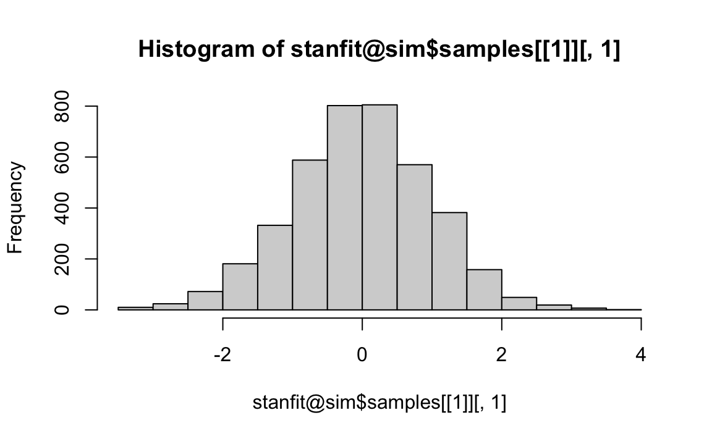

Appendix G — Programmare in Stan
G.1 Interfacce e pacchetti
È possibile accedere al linguaggio Stan tramite diverse interfacce:
-
CmdStan- eseguibile da riga di comando, -
RStan- integrazione con il linguaggio \(\mathsf{R}\); -
PyStan- integrazione con il linguaggio di programmazione Python; -
MatlabStan- integrazione con MATLAB; -
Stan.jl- integrazione con il linguaggio di programmazione Julia; -
StataStan- integrazione con Stata.
Inoltre, vengono fornite interfacce di livello superiore con i pacchetti che utilizzano Stan come backend, principalmente in Linguaggio \(\mathsf{R}\):
-
shinystan- interfaccia grafica interattiva per l’analisi della distribuzione a posteriori e le diagnostiche MCMC; -
bayesplot- insieme di funzioni utilizzabili per creare grafici relativi all’analisi della distribuzione a posteriori, ai test del modello e alle diagnostiche MCMC; -
brms- fornisce un’ampia gamma di modelli lineari e non lineari specificando i modelli statistici mediante la sintassi usata in \(\mathsf{R}\); -
rstanarm- fornisce un sostituto per i modelli frequentisti forniti da base \(\mathsf{R}\) elme4utilizzando la sintassi usata in \(\mathsf{R}\) per la specificazione dei modelli statistici; -
edstan- modelli Stan per la Item Response Theory; -
cmdstanr- un’interfaccia \(\mathsf{R}\) perCmdStan.
G.2 Interfaccia cmdstanr
Negli esempi di questa dispensa verrà usata l’interfaccia cmdstanr. Il pacchetto cmdstanr non è ancora disponibile su CRAN, ma può essere installato come indicato su questo link. Una volta che è stato installato, il pacchetto cmdstanr può essere caricato come un qualsiasi altro pacchetto \(\mathsf{R}\).
Si noti che cmdstanr richiede un’installazione funzionante di CmdStan, l’interfaccia shell per Stan. Se CmdStan non è installato, cmdstanr lo installerà automaticamente se il computer dispone di una Toolchain adatta. Stan richiede infatti che sul computer su cui viene installato siano presenti alcuni strumenti necessari per gestire i file C++. Tra le altre ragioni, questo è dovuto al fatto che il codice Stan viene tradotto in codice C++ e compilato. Il modo migliore per ottenere il software necessario per un computer Windows è quello di installare RTools. Per un computer Linux, è necessario installare build-essential e una versione recente dei compilatori g++ o clang++. Per un Mac è necessario disporre di Xcode Command Line Tools. Se non sono già installati, per installarli, digitare nel Terminal (NON nella console di RStudio):
xcode-select --installI requisiti sono descritti nella Guida di CmdStan.
Per verificare che la Toolchain sia configurata correttamente è possibile utilizzare la funzione check_cmdstan_toolchain().
check_cmdstan_toolchain()Se la toolchain è configurata correttamente, CmdStan può essere installato mediante la funzione install_cmdstan().
install_cmdstan(cores = 2)La versione installata di CmdStan si ottiene con cmdstan_version().
cmdstan_version()
#> [1] "2.31.0"G.3 Codice Stan
Qualunque sia l’interfaccia che viene usata, i modelli sottostanti sono sempre scritti nel linguaggio Stan, il che significa che lo stesso codice Stan è valido per tutte le interfacce possibili. Il codice Stan è costituito da una serie di blocchi che vengono usati per specificare un modello statistico. In ordine, questi blocchi sono: data, transformed data, parameters, transformed parameters, model, e generated quantities.
G.3.1 “Hello, world” – Stan
Quando si studia un nuovo linguaggio di programmazione si utilizza spesso un programma “Hello, world”. Questo è un modo semplice, spesso minimo, per dimostrare alcune delle sintassi di base del linguaggio. Qui presentiamo Stan e scriviamo un programma “Hello, world” per Stan.
Prima di scrivere il nostro primo programma “Hello, world” per Stan (che estrarrà campioni dalla distribuzione a posteriori di un modello gaussiano) spendiamo due parole per spiegare cosa fa Stan. Un utente scrive un modello usando il linguaggio Stan. Questo è solitamente memorizzato in un file di testo .stan. Il modello viene compilato in due passaggi. Innanzitutto, Stan traduce il modello nel file .stan in codice C++. Quindi, quel codice C++ viene compilato in codice macchina. Una volta creato il codice macchina, l’utente può, tramite l’interfaccia CmdStan, campionare la distribuzione definita dal modello ed eseguire altri calcoli con il modello. I risultati del campionamento vengono scritti su disco come file CSV e txt. Come mostrato di seguito, l’utente accede a questi file utilizzando varie funzioni \(\mathsf{R}\), senza interagire direttamente con loro.
Per iniziare, possiamo dire che un programma Stan contiene tre “blocchi” obbligatori: blocco data, blocco parameters, blocco model.
G.3.2 Blocco data
Qui vengono dichiarate le variabili che saranno passate a Stan. Devono essere elencati i nomi delle variabili che saranno utilizzate nel programma, il tipo di dati da registrare per ciascuna variabile, per esempio:
- int = intero,
- real = numeri reali (ovvero, numeri con cifre decimali),
- vector = sequenze ordinate di numeri reali unidimensionali,
- matrix = matrici bidimensionali di numeri reali,
- array = sequenze ordinate di dati multidimensionali.
Devono anche essere dichiarate le dimensioni delle variabili e le eventuali restrizioni sulle variabili (es. upper = 1 lower = 0, che fungono da controlli per Stan). Tutti i nomi delle variabili assegnate qui saranno anche usati negli altri blocchi del programma. Per esempio, l’istruzione seguente dichiaria la variabile Y – la quale rappresenta, ad esempio, l’altezza di 10 persone – come una variabile di tipo real. Ciò significa che specifichiamo un array di lunghezza 10, i cui elementi sono variabili continue definite sull’intervallo dei numeri reali \([-\infty, +\infty]\).
data {
array[10] real Y; // heights for 10 people
}Invece, con l’istruzione seguente dichiariamo la variabile Y – la quale rappresenta, ad esempio, il QI di 10 persone – come una variabile di tipo int, ovvero un array di lunghezza 10, i cui elementi sono numeri naturali, cioè numeri interi non negativi \(\{0, +1, +2, +3, +4, \dots\}\).
data {
array[10] int Y; // qi for 10 people
}Un altro esempio è il seguente, dove viene specificato un array di lunghezza 10, i cui elementi sono delle variabili continue definite sull’intervallo dei numeri reali \([0, 1]\) — per esempio, delle proporzioni.
data {
array[10] real<lower=0, upper=1> Y; // 10 proportions
}Si noti che i tipi vector e matrix contengono solo elementi di tipo real, ovvero variabili continue, mentre gli array possono contenere dati di qualsiasi tipo. I dati passati a Stan devono essere contenuti in un oggetto del tipo list.
G.3.3 Blocco parameters
I parametri che vengono stimati sono dichiarati nel blocco parameters. Per esempio, l’istruzione seguente dichiara la variabile mu che codifica l’altezza media nella popolazione, che è una variabile continua in un intervallo illimitato di valori, e la deviazione standard sigma, che è una variabile continua non negativa. Avremmo anche potuto specificare un limite inferiore di zero su mu perché deve essere non negativo.
parameters {
real mu; // mean height in population
real<lower=0> sigma; // sd of height distribution
}Per una regressione lineare semplice, ad esempio, devono essere dichiarate le variabili corrispondenti all’intercetta (alpha), alla pendenza (beta) e alla deviazione standard degli errori attorno alla linea di regressione (sigma). In altri termini, nel blocco parameters devono essere elencati tutti i parametri che dovranno essere stimati dal modello. Si noti che parametri discreti non sono possibili. Infatti, Stan attualmente non supporta i parametri con valori interi, almeno non direttamente.
G.3.4 Blocco model
Nel blocco model vengono elencate le dichiarazioni relative alla verosimiglianza dei dati e alle distribuzioni a priori dei parametri, come ad esempio, nelle istruzioni seguenti.
model {
for(i in 1:10) {
Y[i] ~ normal(mu, sigma);
}
mu ~ normal(170, 15); // prior for mu
sigma ~ cauchy(0, 20); // prior for sigma
}Mediante l’istruzione all’interno del ciclo for, ciascun valore dell’altezza viene concepito come una variable casuale proveniente da una distribuzione Normale di parametri \(\mu\) e \(\sigma\) (i parametri di interesse nell’inferenza). Il ciclo for viene ripetuto 10 volte perché i dati sono costituiti da un array di 10 elementi (ovvero, il campione è costituito da 10 osservazioni).
Le due righe che seguno il ciclo for specificano le distribuzioni a priori dei parametri su cui vogliamo effettuare l’inferenza. Per \(\mu\) assumiamo una distribuzione a priori Normale di parametri \(\mu = 170\) e \(\sigma = 15\); per \(\sigma\) assumiamo una distribuzione a priori Cauchy(0, 20).
Se non viene definita alcuna distribuzione a priori, Stan utilizzerà la distribuzione a priori predefinita \(Unif(-\infty, +\infty)\). Raccomandazioni sulle distribuzioni a priori sono fornite in questo link.
La precedente notazione di campionamento può anche essere espressa usando la seguente notazione alternativa.
for(i in 1:10) {
target += normal_lpdf(Y[i] | mu, sigma);
}Questa notazione rende trasparente il fatto che, in pratica, Stan esegue un campionamento nello spazio della log-verosimiglianza.
\[ \log p(\theta \mid y) \propto \log p(y \mid \theta) + \log p(\theta) = \sum_{i=1}^n \log p(y_i \mid \theta) + \log p(\theta). \]
Per ogni passo MCMC, viene ottenuto un nuovo valore di \(\mu\) e \(\sigma\) eviene valutata la log densità a posteriori non normalizzata. Ad ogni passo MCMC, Stan calcola un nuovo valore della densità a posteriori su scala logaritmica partendo da un valore di 0 e incrementandola ogni volta che incontra un’istruzione ~. Quindi, le istruzioni precedenti aumentano la log-densità di una quantità pari a \(\log (p(Y[i])) \propto -\frac{1}{2} \log(\sigma^2) - (Y[i]-\mu)^2 / 2\sigma^2\) per le altezze si ciascuno degli \(i=1 \dots, 10\) individui – laddove la formula esprime, in termini logaritmici, la densità Normale da cui sono stati esclusi i termini costanti.
Oppure, in termini vettorializzati, il modello descritto sopra può essere espresso come segue.
model {
Y ~ normal(mu, sigma);
}dove il termine a sinistra di \(\sim\) è un array. Questa notazione più compatta è anche la più efficiente.
G.3.5 Blocchi opzionali
Ci sono inoltre tre blocchi opzionali:
- Il blocco
transformed dataconsente il pre-processing dei dati. È possibile trasformare i parametri del modello; solitamente ciò viene fatto nel caso dei modelli più avanzati per consentire un campionamento MCMC più efficiente. - Il blocco
transformed parametersconsente la manipolazione dei parametri prima del calcolo della distribuzione a posteriori. - Il blocco
generated quantitiesconsente il post-processing riguardante qualsiasi quantità che non fa parte del modello ma può essere calcolata a partire dai parametri del modello, per ogni iterazione dell’algoritmo. Esempi includono la generazione dei campioni a posteriori e le dimensioni degli effetti.
G.3.6 Sintassi
Si noti che il codice Stan richiede i punti e virgola (;) alla fine di ogni istruzione di assegnazione. Questo accade per le dichiarazioni dei dati, per le dichiarazioni dei parametri e ovunque si acceda ad un elemento di un tipo data e lo si assegni a qualcos’altro. I punti e virgola non sono invece richiesti all’inizio di un ciclo o di un’istruzione condizionale, dove non viene assegnato nulla.
In STAN, qualsiasi stringa che segue // denota un commento e viene ignorata dal programma.
Stan è un linguaggio estremamente potente e consente di implementare quasi tutti i modelli statistici, ma al prezzo di un certo sforzo di programmazione. Anche l’adattamento di semplici modelli statistici mediante il linguaggio STAN a volte può essere laborioso. Per molti modelli comunemente usati, come i modelli di regressione e multilivello, tale processo può essere semplificato usando le funzioni del pacchetto brms. D’altra parte, per modelli veramente complessi, non ci sono molte alternative all’uso di STAN. Per chi è curioso, il manuale del linguaggio Stan è accessibile al seguente link.
G.4 Workflow
Se usiamo cmdstanr, dobbiamo prima scrivere il codice con il modello statistico in un file in formato Stan. È necessario poi “transpile” quel file, ovvero tradurre il file in C++ e compilarlo. Ciò viene fatto mediante la funzione cmdstan_model(). Possiamo poi eseguire il campionamento MCMC con il metodo $sample(). Infine è possibile creare un sommario dei risultati usando, per esempio, usando il metodo $summary().
G.5 Ciao, Stan
Scriviamo ora il nostro programma Stan “Hello, world” per generare campioni da una distribuzione Normale standard (con media zero e varianza unitaria).
modelString = "
parameters {
real x;
}
model {
x ~ normal(0, 1);
}
"
writeLines(modelString, con = "code/hello_world.stan")Si noti che ci sono solo due blocchi in questo particolare codice Stan, il blocco parametri e il blocco modello. Questi sono due dei sette blocchi possibili in un codice Stan. Nel blocco parametri, abbiamo i nomi e i tipi di parametri per i quali vogliamo ottenere i campioni. In questo caso, vogliamo ottenere campioni di numeri reale che chiamiamo x. Nel blocco modello, abbiamo il nostro modello statistico. Specifichiamo che x, il parametro di cui vogliamo ottenere i campioni, è normalmente distribuito con media zero e deviazione standard unitaria. Ora che abbiamo il nostro codice (che è stato memorizzato in un file chiamato hello_world.stan), possiamo usare CmdStan per compilarlo e ottenere mod, che è un oggetto \(\mathsf{R}\) che fornisce l’accesso all’eseguibile Stan compilato.
Leggiamo il file in cui abbiamo salvato il codice Stan.
file <- file.path("code", "hello_world.stan")Compiliamo il modello.
mod <- cmdstan_model(file)Eseguiamo il campionamento MCMC.
fit <- mod$sample(
iter_sampling = 4000L,
iter_warmup = 2000L,
seed = SEED,
chains = 4L,
refresh = 0,
thin = 1
)Tasformiamo l’oggetto fit nel formato stanfit per manipolarlo più facilmente.
stanfit <- rstan::read_stan_csv(fit$output_files())Esaminiamo l’oggetto stanfit.
length(stanfit@sim$samples)
#> [1] 4Quello che abbiamo ottenuto sono 4 catene di 4000 osservazioni ciascuna, le quali contengono valori casuali estratti dalla gaussiana standardizzata.
head(stanfit@sim$samples[[1]])Verifichiamo.
hist(stanfit@sim$samples[[1]][, 1])